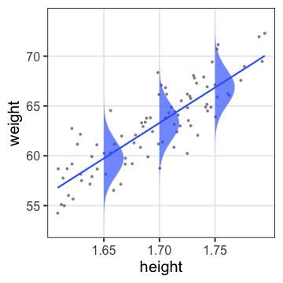
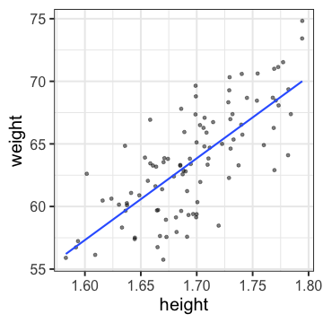
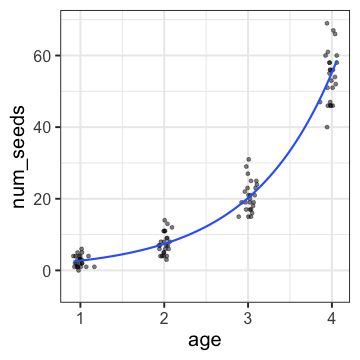
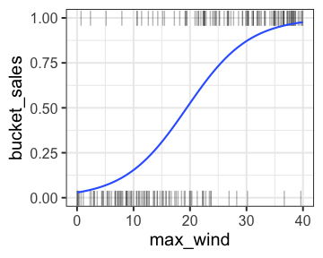

単回帰、正規分布、恒等リンク

これ、どこかで見覚えが…

残差二乗を最小化するパラメータ = 正規分布で尤度最大化するパラメータ

import numpy as np
import statsmodels.api as sm
二項分布＋logitリンクのGLM
何かの成否に対する何かの因子の影響、とか
風が吹けば桶屋が儲かる？

多重共線性
🔰 statsmodelsで交互作用ありモデルを作ってみる
「正しい」ものを選ぶわけではない。
All models are wrong, but some are useful. — George E. P. Box
じゃあどんなものが useful か？
パラメータを増やすほど現データへの適合度・尤度は高まる。
が、新たなデータに対する予測は悪くなる。
\[ \text{AIC} = -2 \ln L + 2 \text{パラメータ数} \]
AICが小さいほど良いモデル。
尤度は高めたいが、パラメータを増やすとペナルティ。
🔰 statsmodelsでAICを確認
ポアソン分布なら平均が決まると分散も決まる。
平均値から考えるよりも分散が大きい場合にどうするか。